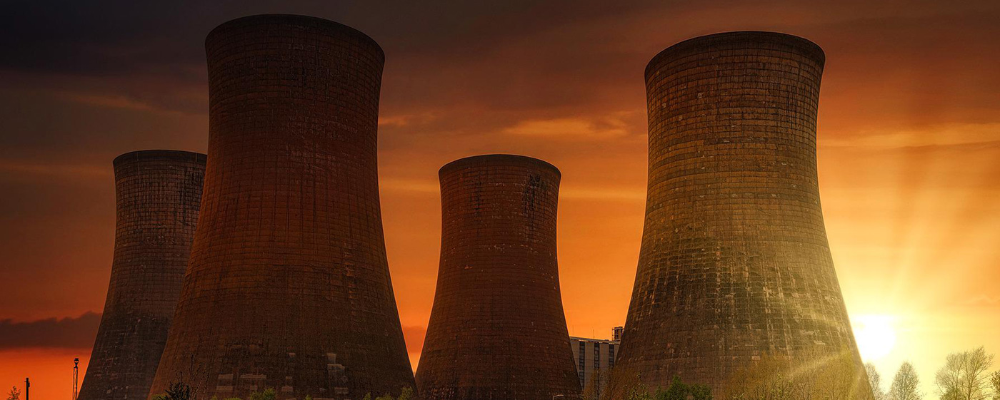
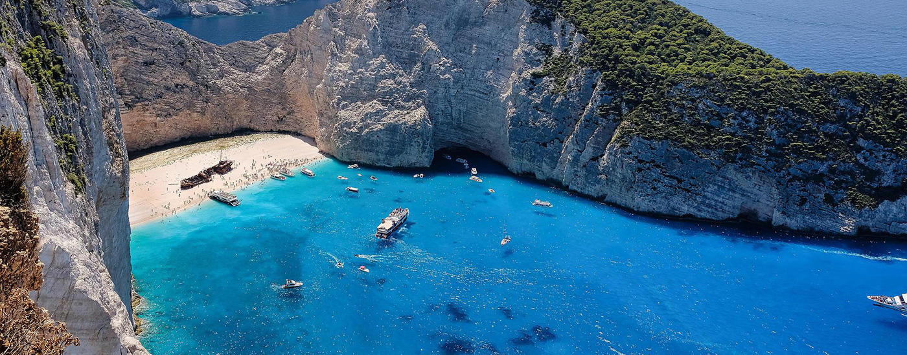
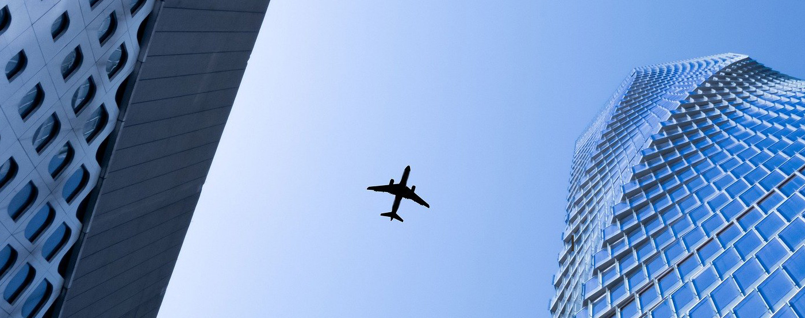
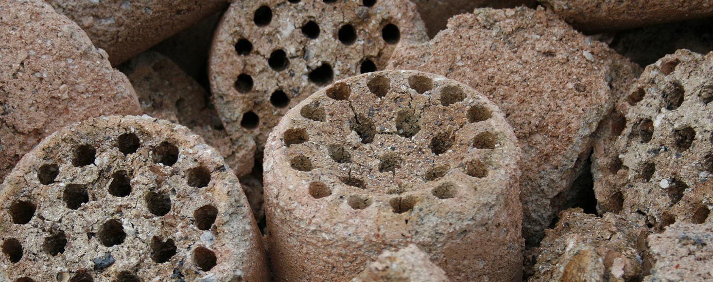

연혁
2020 ~ 2022
-
samchully history
2020 ~ 2022
새로운 에너지를 향한 도약
- 2021
- 07인천연료전지(주) 연료전지 발전소 준공
- 2020
- 10창립 65주년
-
samchully history
2010 ~ 2020
다양한 도전과 수 많은 발자취들
- 2018
- 09KLPGA-삼천리 투게더 꿈나무대회 2018 개최
- 2017
- 06KLPGA-삼천리 투게더 꿈나무대회 2017 개최
- 04삼천리 Together Open 2017 개최
- 04사보 'Together' 온라인 사보 전환
- 2016
- 12(주)삼천리모터스 설립
- 10KLPGA-삼천리 꿈나무대회 2016 개최
- 04삼천리 Together Open 2016 개최
- 2015
- 10KLPGA-삼천리 꿈나무대회 2015 개최
- 10창립 60주년 기념식 및 비전 선포
- 04삼천리 Together Open 2015 개최
- 04(주)S-Power 안산복합화력발전소 준공
- 2014
- 12삼천리 스포츠단 창단
- 11㈜ S-Power 안산복합화력발전소 상업운전
- 2013
- 12경기그린에너지㈜ 상업운전 개시
- 09도서지역 발전용 LNG 공급을 위한 국책과제
- 06㈜HUCES 수원 호매실 열원시설 준공
- 2012
- 12소비자중심경영(CCM)인증 획득
- 11안산LNG복합화력발전소 착공
- 08오산 기술연구소 준공
- 04삼천리·GS에너지 집단에너지 사업권 획득
- 02기상청 제1회 날씨경영인증 획득
- 01안산LNG복합화력사업을 위한 ㈜S-Power
- 2011
- 11경기그린에너지㈜ 설립
- 09중국과 에너지사업 공동추진을 위한 MOU체결
- 09안산복합화력발전사업을 위한 MOU체결
- 08환경부 국책과제 세부주관기관 선정
- 06기상청 ‘제 6회 대한민국 기상정보대상’ 동상
- 04세계 최대의 연료전지발전소 건설 MOU 체결
- 03GS 퓨얼셀과 연료전지 시범보급 MOU 체결
- 03GS파워와 집단에너지사업 추진 MOU 체결
- 2010
- 10ERP기반 신규 통합정보시스템 ‘넷두레’ 구축
- 10창립 55주년 기념식 및 비전 선포
- 08삼천리 Annual Report, 美 LAC 에너지 수상
- 08포스코파워와 그린에너지 사업협력 MOU체결
- 07광명열병합발전소 준공
- 07터키 그룹과 터키 에너지사업진출 MOU체결
- 04국내 최초 중소형 차량 전용 CNG충전소 준공
- 01SI(Service Identity) 선포
-
samchully history
2000 ~ 2010
삼천리 도시가스에 도전하다
- 2009
- 12안산도시개발㈜ 지분 인수
- 12PVGASCITY와 베트남 사업 진출 MOU 체결
- 11도시가스업계 봉사의 날 실시
- 07평택국제화계획지구 집단에너지사업권 획득
- 06맥쿼리삼천리 특별자산운용사 본인가 승인
- 04클린데이(오산 독산성) 실시
- 02안전관리종합평가 1등급 (한국가스안전공사)
- 2008
- 10㈜SL&C 설립
- 04㈜함평태양광발전소 상업운전 개시
- 03안전관리종합평가 1위 (한국가스안전공사)
- 02미국 멕시코만 심해가스전 광권계약 체결
- 2007
- 12㈜함평태양광발전소 인수
- 11광명지구 집단에너지 사업 열병합발전소 착공
- 11이라크 바지안 광구 탐사사업 참여
- 01구역전기사업자협의회 출범
- 2006
- 11삼천리 클린데이 실시 (시화방조제)
- 09㈜휴세스(HUCES) 설립
- 06한국지역난방공사와 합작투자 협약식 체결
- 05무디스 신용등급 A2로 상향 조정
- 04일사일촌 주말 농장 개장( 평궁리 600여 평)
- 2005
- 12광명 역세권 집단에너지사업권 획득
- 12삼천리 윤리경영 선포식
- 11클린데이(인천 청량산) 실시
- 10창립 50주년 기념식 및 비전 선포
- 10해외자원개발 사업 진출
- 09클린데이(안산 수리산) 실시
- 08일사일촌 자매결연 실시
- 2004
- 06인천 송도 집단에너지 합작법인 설립
- 02사내MBA 제1기 개강
- 2002
- 05인천시, 경기도 CNG버스 기증
- 01㈜삼천리ENG 설립
- 2001
- 12㈜삼천리ES 설립
- 10기술연구소 트레이닝 센터 설립
- 09삼천리 통합정보시스템 SICOMS 구축
- 03회사채 신용등급 AA로 상향
- 2000
- 11도시가스업계 최초 LNG 판매량 20억㎥ 돌파
- 09도시가스부문 고객만족도 1위 선정
-
samchully history
1950 ~ 2000
삼천리 그 찬란한 시작
- 1998
- 07국내 최초 상업용 CNG 충전소 준공(인천)
- 1996
- 12도시가스 판매량 1위 달성
- 11도시가스 판매량 10억㎥ 돌파
- 10도시가스 홍보관 개관(부천)
- 1990
- 12삼천리 기술연구소 설립
- 1984
- 10주식회사 삼천리로 상호변경
- 03금탑산업훈장 수훈
- 1983
- 06여의도 사옥 준공
- 1982
- 05도시가스 사업 진출
- 1976
- 12기업공개
- 1973
- 06삼천리사업 주식회사로 상호 변경
- 1966
- 07삼천리연탄 주식회사 법인 설립
- 1955
- 10삼천리연탄기업사 창립